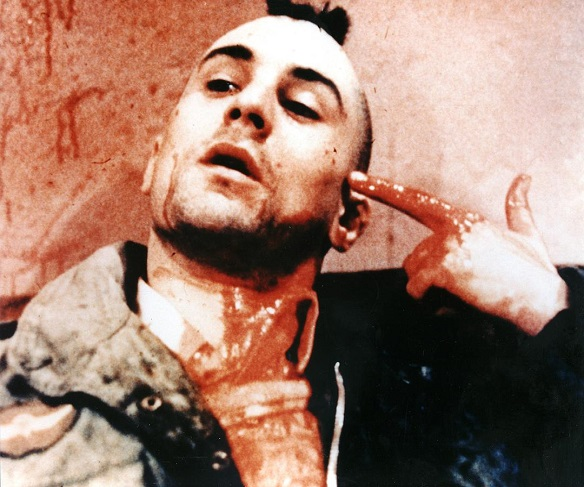
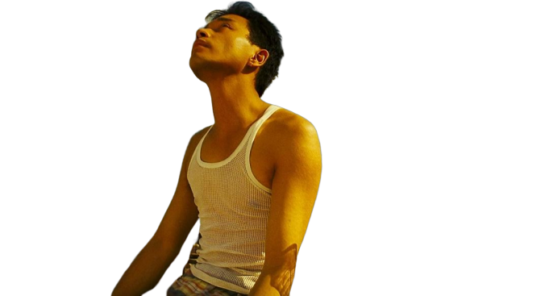
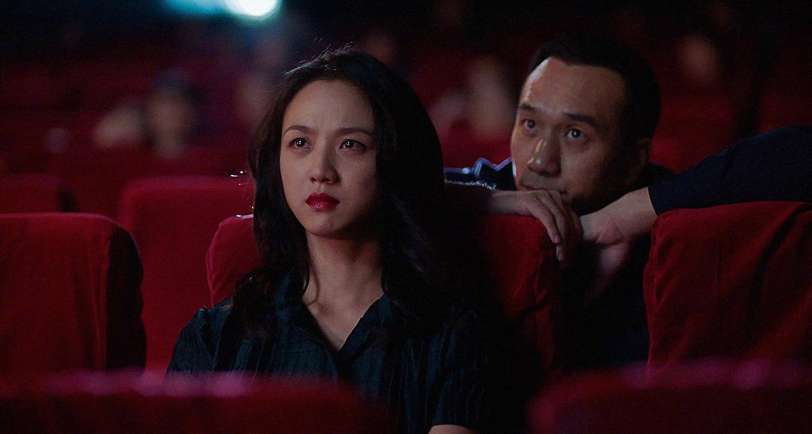
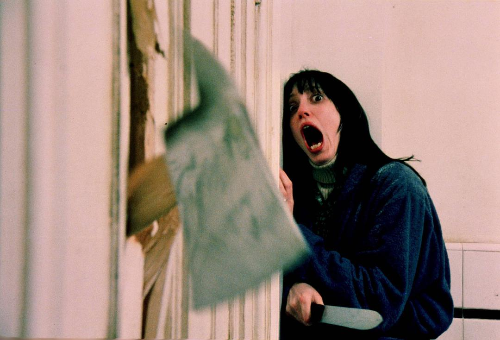

出租车司机 我们都曾有这么一段日子，忽然开始锻炼身体，在街头霓虹灯下漠然地行走，满身的力量却不知道该拿来去对付谁。

李安
导演
没有一个真心诚意的交流，生活是很空虚的。人生是荒谬的，而深层交流不能明讲，只有靠艺术、靠电影，靠这些虚幻的东西，假设的东西，在里面交流，你才会感觉没有那么孤单，没有那么无助。

爱在黎明破晓前
河畔之诗：“浸入白日梦中的幻觉/ 眨动了密长的睫毛/ 哦，亲爱的，滑过你美丽的脸庞/ 在我的酒杯里坠入一滴清泪/ 凝视你纯净的双眸/ 了然了你是我生命的意义/ 仿佛奶昔在蛋糕的甜美中交融/ 我像那恍惚中浮现的天使/ 在梦幻中游戈飘荡/ 怎忍在看你芳心百转/ 却如何才能两情相悦…”

地球最后的夜晚
在2018年的最后一个夜晚，那个凯里的男生，用一部疯狂的电影，“哄骗”了一群不会做梦的年轻人进入电影院，寻找电影里根本不存在的罗曼蒂克，成为一名昏昏欲睡的受害者。这部入围戛纳的作品，在我们的魔幻土地上评分三点几，成为比小时代还烂的电影。
而我只是跟男主一样，做了一场梦，并甘愿在梦里。
“你数过天上的星星吗，他们像小鸟一样，在我的胸口跳伞”

两
杆大烟枪
浓郁的英伦范儿，搞怪的人物性格，多线交互叙事方式，无比精准多线互绕轮回归一的剧情，开放式结局，多处变速剪辑，以及精准切合的配乐，加上一帮英伦痞子的优秀表演